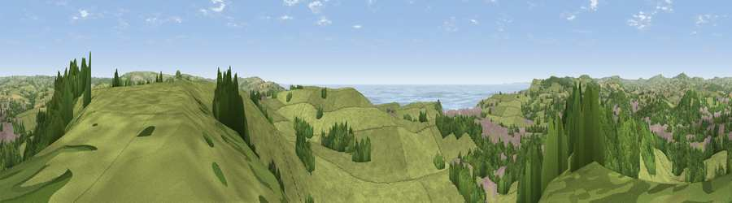

Viewpoint near Walditch
#4022 in England · top 10% of its area beats it · near WalditchWhere it is
The exact computed spot (SY 47825 92025). Click the marker for map links.
The view, rendered

A 360° render of this exact spot computed from the terrain model, tree cover and land cover — summer colours, afternoon light, calibrated against photographs of famous viewpoints. Real trees, hedges and buildings will differ in detail.
The panorama
Grey silhouette: terrain skyline in each direction (720 bearings, Earth curvature and refraction included). Dashed green: skyline with trees (+15 m) and buildings (+8 m) as obstacles. Blue strip: how far the ground is visible on each bearing.
Where the view opens
Wedge length = distance to the farthest visible ground on that bearing (vegetation-aware). Rings at 10, 25 and 50 km.
What fills the view
67% grassland · 21% woodland · 6% built-up · 4% water · 2% cropland
Angular shares of the visible panorama (visual magnitude), not map area. Landscape diversity 0.42 (0–1 Shannon).
Key numbers
More beautiful places nearby
The staircase of upgrades: each row has a higher view potential than everything closer. Driving times are estimates from straight-line distance, calibrated against real road routing — check an actual route before setting out.
| Place | Direction | Drive | Score |
|---|---|---|---|
| Viewpoint near Burton Bradstock | S · 1 km | ~4 min | 76.0 |
| Viewpoint near Burton Bradstock | SSE · 2 km | ~5 min | 77.5 |
| Thorncombe Beacon | W · 5 km | ~10 min | 83.3 |
| Beacon Knap | SE · 5 km | ~12 min | 84.8 |
| Viewpoint near North Chideock | W · 7 km | ~14 min | 87.1 |
| The Knoll | SE · 7 km | ~15 min | 91.0 |
50.72549, -2.74055 · source: screening · position refined by local search. Computed location — check access rights before visiting.